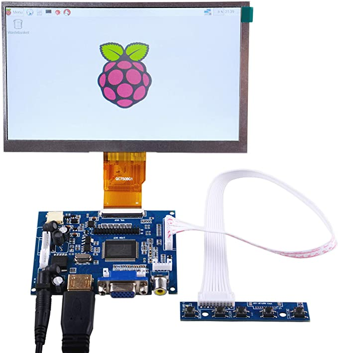
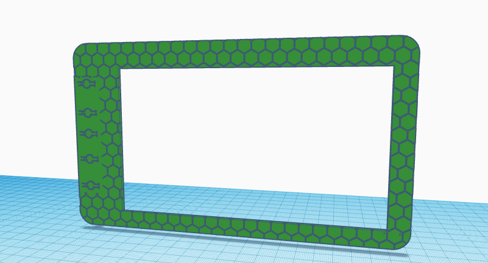
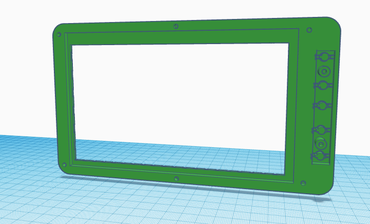
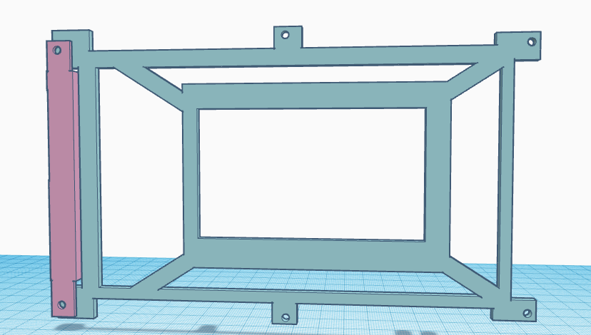
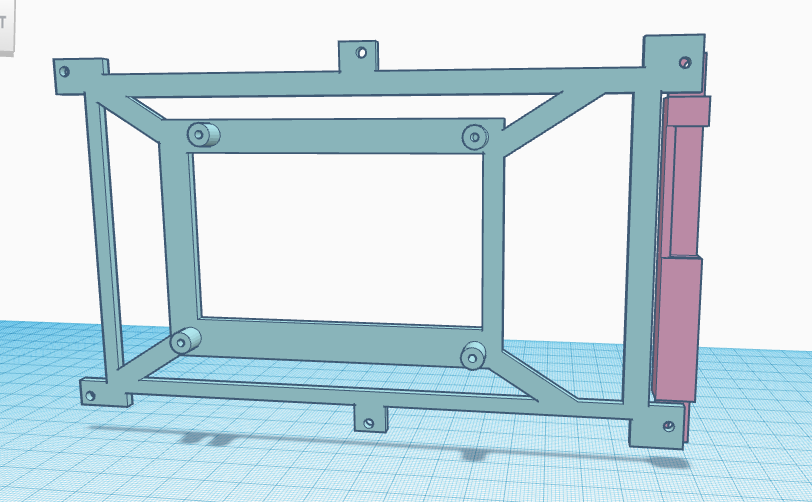
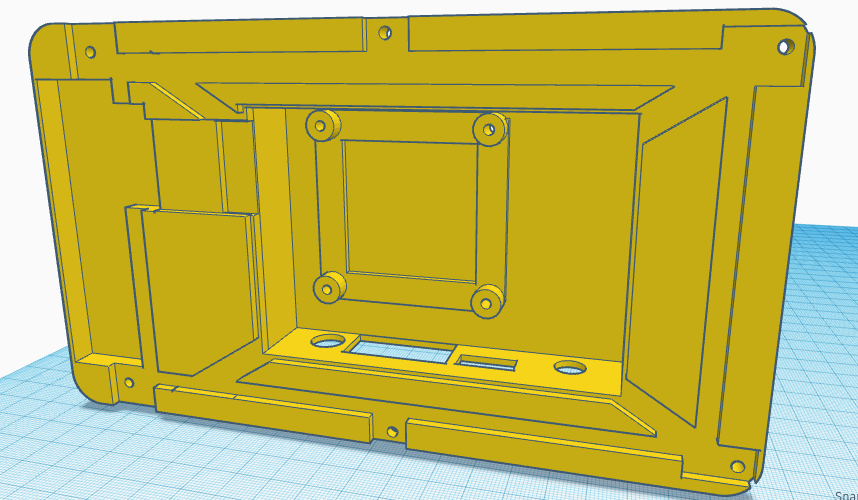
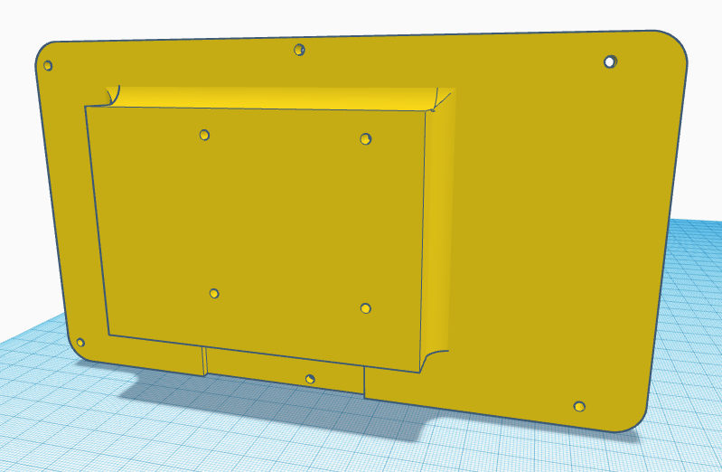
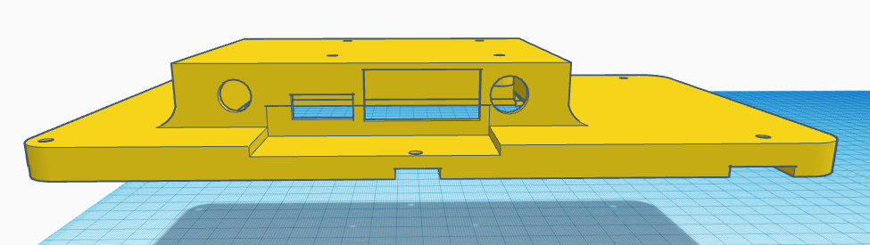

Compre el siguiente monitor para poder usarlo con mi raspberry pi el monitor que compre fue el siguiente

Y como se puede observar, es muy simple el modelo y por eso lo elegí, pense en hacerle un carcasa pues est modelo no cuenta con una ni con el espacio como para ponerle tornillos asi que le diseñe una en 3D y la imprimi.
Lo primero que diseñe fue la parte delantera, en esta parte los botonoes y la pantalla estaran, para esto los diseñe uno al lado del otro de cierta forma que incluso aunque los botones esten tapados estos se puedan presionar.


Luego le tuve que crear un soprte que mantenga la pantalla en su lugar asi como la placa con los botnoes que controla la pantalla. Estas son dos partes pues necesitaba que los botones se sujetaran un poco más adelante, lo que si fuese una sola pieza causaria que la demas pieza seria mucho más dificil de poder imprimir. Ademas esta parte iba a estar atornillada a la placa más grande que adapta las entradas de video a el conector de la pantalla por lo que tuvo que ser puesta en una poscicion especifica, y como la placa con los botones iba a estar al lado esta necesitaba de un lugar por el cual los cables llegaran a pasar para poder conectarse a la placa más grande


Finalmente la tapa que va encima de estos otros componentes, esta tiene una forma especifica en la cual la segunda placa debe pasar a traves, esto para que todo al final se vea de el color de la ultima tapa, ademas de que debia de tener espacio para la salida de todos los conectores de la placa grande y ademas una entrada que trate de hacer "estandar" para que este monitor luego pueda ser montado en cualquier parte con la montura correcta, esta parte consiste en 4 hoyos de 1/8 de pulgada formando un cuadrado de 5cm por lado, asi si quisiera hacer un soporte solo necesito diseñar el soporte y luego esta entrada para finalmente tener un soprte funcional, que fue luego lo que hice



Y finalmente todo se atornilla con tornillos de 1/8, pero estos no deben ser muy largos.
Tuve varios problemas para diseñar esto especialmente en la parte de enmedio, por lo que le hice modificaciones al modelo ya impreso que ya no actualize en el modelo 3D, alguna de estas es hacer que los ultimos tornillos puedan pasar hasta la primera capa